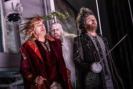

|
Romeo a Julie |
Romeo a Julie (Romeo and Juliet)
je divadelní hra, kterou napsal William Shakespeare. Premiéru měla v roce 1595. Jedná se o milostnou tragédii, patrně jeden z nejznámějších milostných příběhů v historii světového dramatu. |
tragédie |
|---|
 |
Zkrocení zlé ženy |
Zkrocení zlé ženy (The Taming of the Shrew) je divadelní hra Williama Shakespeara, kterou napsal v letech 1590 až 1591. Hra popisuje vztahy mezi muži a ženami, a to po stránce kurtoazní (středověká platonická láska) a nebo misogynní (nenávist muže k ženám). |
komedie |
|---|
|  |
Bouře |
Bouře (anglicky The Tempest) je nejznámější divadelní romance proslulého anglického básníka a dramatika Williama Shakespeara. Hra byla napsána roku 1611 a je zároveň poslední samostatně napsanou hrou autora, dále napsal jen hry ve spolupráci s dramatikem Johnem Fletchrem. |
pohádková hra |
|---|